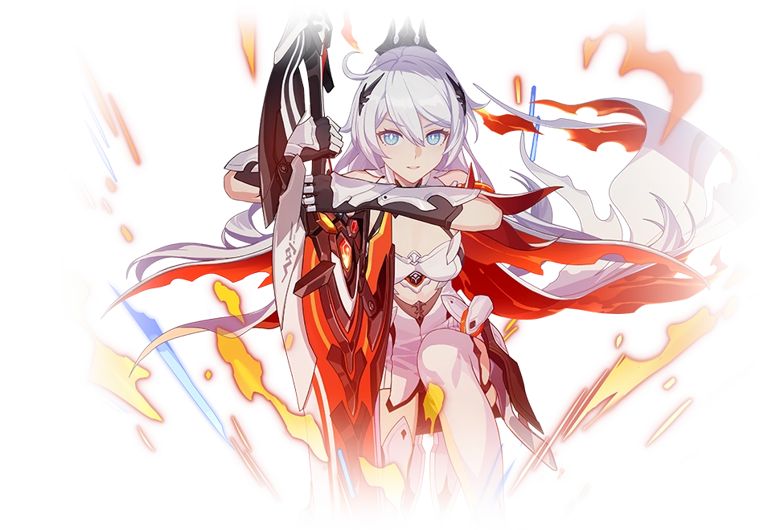

It was in the deepest reaches of her dreams that she would always see that girl's tragic, fragmented, memories. She would look away, close her eyes, and run with all her might, but all this only deepened the sneer that the other presence within her wore. Now, she has decided to face everything head-on: to accept who she is, to bear the heavy burden of the past. This road is destined to be a thorny one, but the will that she carries shall also become the flame with which she shall carve the way forward.
The greatsword is weighty. Heavy. What thoughts were running through her teacher's head when she once wielded it? She met her once more in the shadows created by the crimson gem. There was still so much she wanted to say at the end of that journey--- in the face of those gentle eyes. Yet words were unnecessary --- the things that her teacher intended to impart to her had always been in her hands.
When she unleashed that final blow in the Theater of Domination, beams of light coalesced around the blade of her greatsword. As if affected by the wishes of the people all around her, they transferred her companions' strength into her and kindled the hope gathering around her form. The young maiden did not turn back, but she knew in her heart that it was the gazes that were upon her --- that it was her companions --- who had given her the strength to carry on--- giving her a flame that would not be extinguished even amidst the darkest of nights.
The greatsword is weighty. Heavy. What thoughts were running through her teacher's head when she once wielded it? She met her once more in the shadows created by the crimson gem. There was still so much she wanted to say at the end of that journey--- in the face of those gentle eyes. Yet words were unnecessary --- the things that her teacher intended to impart to her had always been in her hands.
When she unleashed that final blow in the Theater of Domination, beams of light coalesced around the blade of her greatsword. As if affected by the wishes of the people all around her, they transferred her companions' strength into her and kindled the hope gathering around her form. The young maiden did not turn back, but she knew in her heart that it was the gazes that were upon her --- that it was her companions --- who had given her the strength to carry on--- giving her a flame that would not be extinguished even amidst the darkest of nights.

Mei Raiden absorbed all residual Honkai energy in Nagazora and awakened by her own will as the Herrscher of Thunder. The awe-inspiring look speaks of her immense power and the whole world trembles in her presence.
In World Serpent, Mei has put on a face of indifference and apathy. She’s frozen her heart and cloaked herself with solitude. The dark world sees her as an outlier. But there are still people who know her past and quietly walk away when she drowns herself in sorrow.
She broke with her past the day when thunder fell over Nagazora. Everything she once cherished was washed away in the dark storm. When the white-haired girl woke up, the storm had died down and warm sunshine gently blanketed her, but the thunder - the rumbling thunder in her faint memory - was long gone.
In World Serpent, Mei has put on a face of indifference and apathy. She’s frozen her heart and cloaked herself with solitude. The dark world sees her as an outlier. But there are still people who know her past and quietly walk away when she drowns herself in sorrow.
She broke with her past the day when thunder fell over Nagazora. Everything she once cherished was washed away in the dark storm. When the white-haired girl woke up, the storm had died down and warm sunshine gently blanketed her, but the thunder - the rumbling thunder in her faint memory - was long gone.
Bronya assumed this form after gaining control over the Core of Reason while in the Sea of Quanta. This is the living proof that she earned the approval of Welt Yang. In this state, both Project Bunny and Bronya herself underwent several “rational” changes. But only to a limited extent.
The Herrscher of Reason uses Honkai energy to construct items that she “fully understands”. As a result, most of the powers were based on Project Bunny. Though Bronya could not manifest powerful mechs, ships, or other military hardware like Welt, she was able to manipulate Project Bunny in unimaginable ways.
Bronya may have improved her Honkai resistance during X-10, but the Core of Reason could still pose a threat to her. Extended use of Core powers will damage her body, much like it did to Welt Yang. Bronya was hardly concerned about that. Her focus remained on her search for the Gem of Desire, Seele, and a chance to rescue Welt Yang from the Sea of Quanta.
The Herrscher of Reason uses Honkai energy to construct items that she “fully understands”. As a result, most of the powers were based on Project Bunny. Though Bronya could not manifest powerful mechs, ships, or other military hardware like Welt, she was able to manipulate Project Bunny in unimaginable ways.
Bronya may have improved her Honkai resistance during X-10, but the Core of Reason could still pose a threat to her. Extended use of Core powers will damage her body, much like it did to Welt Yang. Bronya was hardly concerned about that. Her focus remained on her search for the Gem of Desire, Seele, and a chance to rescue Welt Yang from the Sea of Quanta.
As the School of Taixuan’s founder, CEO, and proprietor, the Herrscher of Sentience has made remarkable contributions to the world. She has freed humanity from the evil clutches of the Honkai and restored safety and peace. Let’s give her a round of applause for her extraordinary achievements!
The Herrscher of Sentience is known to be the most beautiful and strongest person in the universe. She has fully committed herself to the crusade of fighting the Honkai and protecting the world. However, from time to time, she actually causes more damage than the Honkai does while fighting it.
Come on, that last sentence for the last paragraph was totally unnecessary! Was I not clear enough about “nothing but good words”? Never mind, I’ll write it myself. Hey, world, I’m the strongest and the best! No one can match me! Period.
The Herrscher of Sentience is known to be the most beautiful and strongest person in the universe. She has fully committed herself to the crusade of fighting the Honkai and protecting the world. However, from time to time, she actually causes more damage than the Honkai does while fighting it.
Come on, that last sentence for the last paragraph was totally unnecessary! Was I not clear enough about “nothing but good words”? Never mind, I’ll write it myself. Hey, world, I’m the strongest and the best! No one can match me! Period.
Having surpassed Active Honkai Reaction and Honkai's native power, along with activating Kaslana's and Schariac's stigmata, Schicksal's strongest Valkyrie has joined the Equinoxes.
Otto split her life in two when she was ten. Before which, she was Kiana Kaslana. After which, Bianka Ataegina was born.
Nevertheless, she is still Durandal. This fact will never change.
Her wish is to keep getting stronger. She needs more power to safeguard what she holds dear. She needs more power to pass on hope from those who came before, and she doesn't mind where this power comes from. She means to devote every drop of her strength to guarding what's beautiful and true.
This is her philosophy.
Otto split her life in two when she was ten. Before which, she was Kiana Kaslana. After which, Bianka Ataegina was born.
Nevertheless, she is still Durandal. This fact will never change.
Her wish is to keep getting stronger. She needs more power to safeguard what she holds dear. She needs more power to pass on hope from those who came before, and she doesn't mind where this power comes from. She means to devote every drop of her strength to guarding what's beautiful and true.
This is her philosophy.
Unfathomable darkness welcomed her into this world. Fortunately, that girl answered the feeble cries she forced out. Who am I? Why am I seeing part of her life? She did not know. The only thing she knew was that in a world of darkness, the smile of that girl gave meaning to her existence.
The girl named Seele was what she lived for. She seldom spoke her mind, but was exceptionally sensitive. Why did Seele's inexplicable feelings tug her heartstrings? She continued to absorb Seele's sadness, fear, pain, and helplessness, and these negative feelings pushed her over the edge. Even so, the first wish she made, which was to protect the girl from any harm, did not waver.
She had always known she was an ambiguous and chaotic being. Why would anyone like the monster inside an innocent girl? Even if the judgement of others did not concern her, the risk of Seele being viewed as a freak did. The other me – this was how the girl called her. She liked the phrase, for it signified the girl had recognized her, but she still wished to be called by a real name somewhere deep down. When that day comes, please call her by her favourite name – Seele.
The girl named Seele was what she lived for. She seldom spoke her mind, but was exceptionally sensitive. Why did Seele's inexplicable feelings tug her heartstrings? She continued to absorb Seele's sadness, fear, pain, and helplessness, and these negative feelings pushed her over the edge. Even so, the first wish she made, which was to protect the girl from any harm, did not waver.
She had always known she was an ambiguous and chaotic being. Why would anyone like the monster inside an innocent girl? Even if the judgement of others did not concern her, the risk of Seele being viewed as a freak did. The other me – this was how the girl called her. She liked the phrase, for it signified the girl had recognized her, but she still wished to be called by a real name somewhere deep down. When that day comes, please call her by her favourite name – Seele.
In the end, she vanished into the light.
Her kindness, beauty, and love morphed into seeds of new life, scattered over that withered land.
Then, what about the last Divine Key?
Some say that the talented mechanic had buried her masterpiece in an unknown corner; some say that the 13th Herrscher never left her Core behind, that every part of her had disappeared in the long finale. Some also say that they had witnessed that eccentric green-haired professor hide all information about that crusade, just to monopolise humanity's last weapon.
What a vague answer, don't you think?
Just like the Thirteen Flame-Chasers, their stories, past lives, and traces of existence are kept here like a romantic fairy tale, read and known only by you.
Because of your memory, the sealed story has found its purpose, the stone cold data has found life; you have watched and given this story a different meaning. Your company has brought about the miracle now.
You... left a unique, new annotation on this story.
Thank you for meeting us.
If there's anything that can bring honor to humans, that would be humans themselves.
The last Divine Key is actually right here. It exists in our hearts, lying eternally in this world.
Her kindness, beauty, and love morphed into seeds of new life, scattered over that withered land.
Then, what about the last Divine Key?
Some say that the talented mechanic had buried her masterpiece in an unknown corner; some say that the 13th Herrscher never left her Core behind, that every part of her had disappeared in the long finale. Some also say that they had witnessed that eccentric green-haired professor hide all information about that crusade, just to monopolise humanity's last weapon.
What a vague answer, don't you think?
Just like the Thirteen Flame-Chasers, their stories, past lives, and traces of existence are kept here like a romantic fairy tale, read and known only by you.
Because of your memory, the sealed story has found its purpose, the stone cold data has found life; you have watched and given this story a different meaning. Your company has brought about the miracle now.
You... left a unique, new annotation on this story.
Thank you for meeting us.
If there's anything that can bring honor to humans, that would be humans themselves.
The last Divine Key is actually right here. It exists in our hearts, lying eternally in this world.